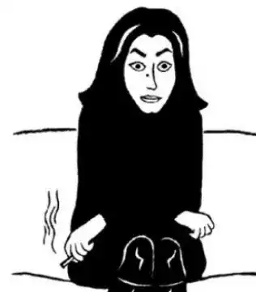

Marjane Satrapi
Marjane Satrapi, réalisatrice, écrivaine…
A travers ses oeuvres, elle aborde son histoire, son pays natale : l’Iran
Marjane Satrapi est née le 22 novembre 1969 à Rasht en Iran. Ses parents sont proches des idées communistes. Elle vit une partie de son enfance sous l’influence de la révolution islamique et les débuts de la guerre entre l’Irak et l’Iran en 1980.
En 1984, alors qu’elle n’a que 14 ans, elle est envoyée sous la volonté de ses parents dans un lycée français à Vienne, en Autriche. Elle retourne en Iran en 1988, 4 ans plus tard. Elle décroche une maîtrise de communication en Iran. En 1994, elle s’installe alors en France. Elle intègre l’école supérieure des arts décoratifs de Strasbourg dans l’idée de devenir graphiste. Elle réside actuellement à Paris.
Son oeuvre
Elle décide de raconter son histoire. Elle publie les quatre tomes de « Persepolis ». C’est son passage à l’atelier des Vosges qui lui donne le goût de la bande dessinée.
L’atelier des Vosges est un groupe d’auteurs de bandes dessinées, ils travaillent ensemble dans le même lieu.
C’est la première bande dessinée qui raconte l’histoire iranienne. Les deux premiers exemplaires se vendent à plus de 20 000 exemplaires. L’histoire est alors adaptée au cinéma en 2007, en long métrage en noir et blanc. Réalisé par l’auteure elle-même : Marjane Satrapi et Vincent Paronnaud.
« Dans la bande dessinée, dit-elle, contrairement à l’illustration, les dessins font partie de l’écriture. Ils ne viennent pas accompagner un texte déjà existant, les deux fonctionnent ensemble. […]. Et si vous ajoutez de la couleur, des décors ou autres, ce sont des codes supplémentaires qui changent le rythme de lecture du livre. Voilà donc une première raison pour laquelle je choisis le noir et blanc : parce que mes histoires sont souvent très bavardes, et si le dessin est lui aussi très bavard, cela peut devenir excessif. J’essaie d’obtenir une harmonie, je mise sur l’expression … ».
Elle justifie ici ses choix graphiques, par rapport au choix d’utiliser le contraste noir et blanc dans sa bande dessinée.
En 2003 elle publie « Broderie », une bande dessinée, l’auteure met en scène deux femmes iraniennes parlant librement d’amour, de sexe.
En 2004, elle publie « Poulet aux prunes », bande dessinée, c’est l’histoire d’un musicien qui perdant le goût de jouer décide de se laisser mourir. Il relate alors sa vie, ses rencontres, ses souvenirs… Son oeuvre est adaptée au cinéma en 2010, réalisée par l’auteure elle même et accompagnée encore une fois de Vincent Paronnaud.
Ses oeuvres sont en lien avec son pays natal : l’Iran. Elle y pose des questions universelles surtout dans son oeuvre « Persepolis ». L’intégration, l’adaptation à d’autres cultures et l’identité.